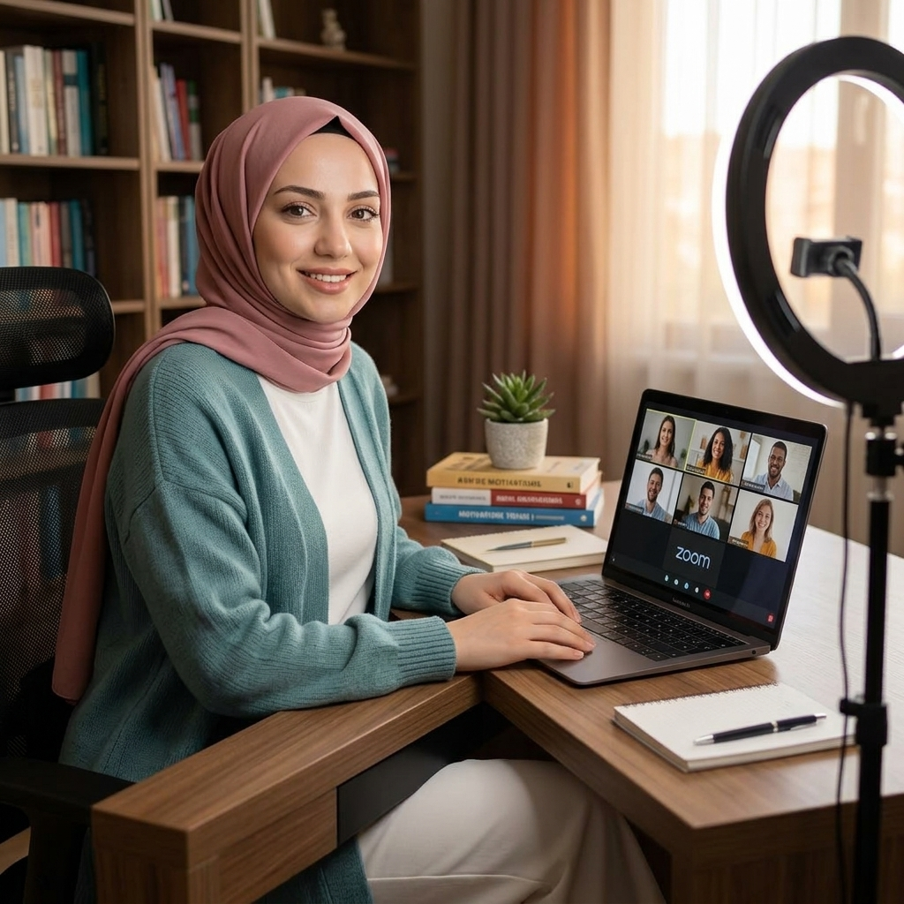
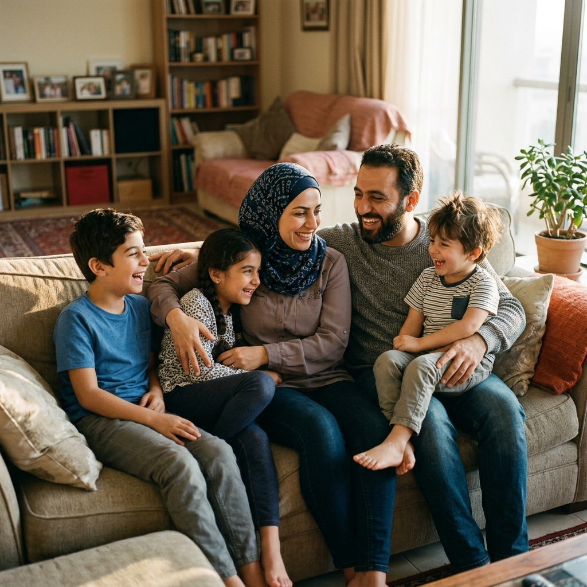
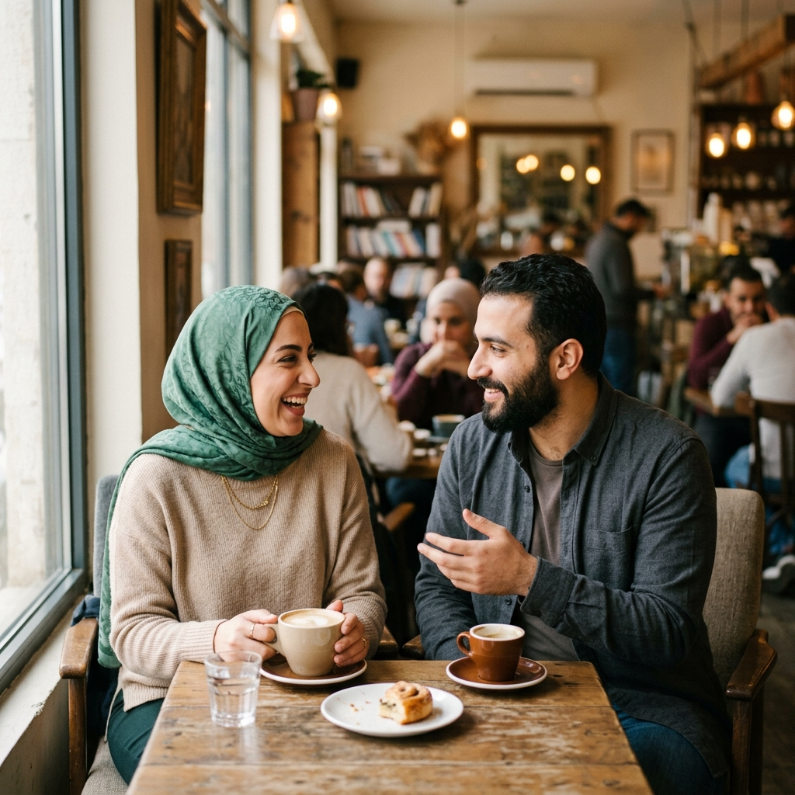

أخصائية نفسية | استشارات أسرية وزوجية أونلاين
امتلكي قلب شريكك وممتلكتكِ بـ "الطب الشعوري".. اكتشفي أسرار العلاقات الناجحة وابني حياة أسرية مليئة بالحب والتفاهم والسعادة. جلساتي كلها أونلاين من راحة بيتك.

أنا مروة إمام، أخصائية نفسية وباحثة دكتوراه في علم النفس، متخصصة في الاستشارات الأسرية والزوجية. أؤمن بأن كل علاقة تستحق فرصة ثانية، وأن الحب الحقيقي يحتاج فقط إلى اللغة الصحيحة للتعبير عنه.
من خلال منهج "الطب الشعوري" الفريد، ساعدت مئات الأفراد والأزواج على إعادة بناء علاقاتهم وتحقيق التوازن النفسي والعاطفي في حياتهم. جميع جلساتي تتم أونلاين عبر مكالمات فيديو خاصة وآمنة، مما يتيح لكِ الحصول على الدعم من راحة بيتك وفي الوقت الذي يناسبك.
متخصصة في الصحة النفسية والإرشاد النفسي
حلول عملية لبناء علاقة زوجية ناجحة عن بُعد
دعم الأسرة لتحقيق التوازن والتفاهم من بيتك
منهج فريد لفهم الذات والعلاقات
أقدم لكِ مجموعة متكاملة من الخدمات النفسية والاستشارية أونلاين لمساعدتك على بناء حياة أسعد وأكثر توازناً من راحة بيتك
جلسات خاصة عبر مكالمات فيديو لمساعدتك على فهم ذاتك والتعامل مع التحديات النفسية بطرق فعّالة ومبتكرة تعيد لك توازنك الداخلي
جلسات متخصصة أونلاين للأزواج لحل المشكلات الزوجية وتعزيز التواصل والتفاهم وبناء علاقة مبنية على الحب والاحترام المتبادل
دعم الأسرة بالكامل أونلاين لتحقيق بيئة صحية ومتوازنة، والتعامل مع التحديات التربوية والعلاقات بين أفراد الأسرة
منهج فريد يجمع بين الطب الشعوري وعلم النفس الحديث لمساعدتك على فهم مشاعرك ومشاعر شريكك بعمق وتحقيق التناغم النفسي والعاطفي
الطب الشعوري هو منهج فريد ومبتكر يجمع بين علم النفس الحديث والاتصال الشعوري العميق. هذا المنهج يساعدك على فهم المشاعر والاحتياجات العميقة التي تحكم العلاقات الإنسانية، وكيف يمكنك استخدامها لبناء علاقات أقوى وأعمق مع نفسك ومع من حولك.
اكتشفي أنماطك العاطفية وقوتك الداخلية الكامنة
تعلّمي كيف تتوافقين مع مشاعرك لجذب الحب والسعادة
أدوات عملية لتحويل أي علاقة من الصراع إلى التناغم
رحلة تطور شاملة تشمل العقل والقلب والروح
لمحات من جلساتي الأونلاين وورش العمل وأنشطتي المختلفة


إجابات على الأسئلة الأكثر شيوعاً حول خدماتي ومنهجي في العمل
الخطوة الأولى نحو حياة أسعد تبدأ بمحادثة بسيطة. لا تترددي في التواصل معي لحجز استشارتك أو لأي استفسار. أنا هنا لمساعدتك.